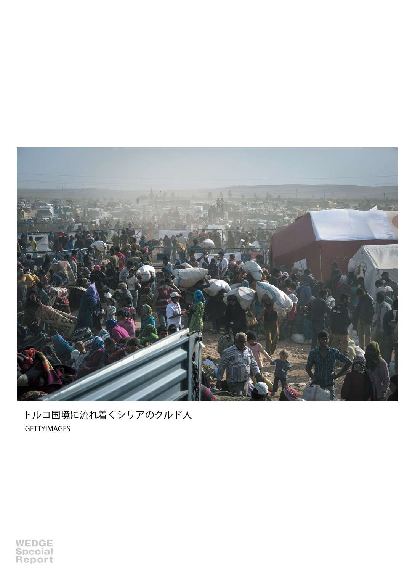
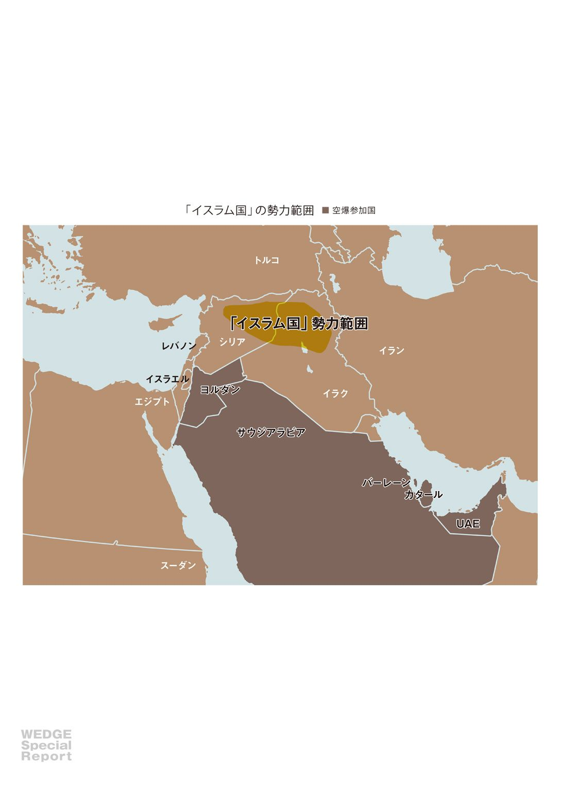
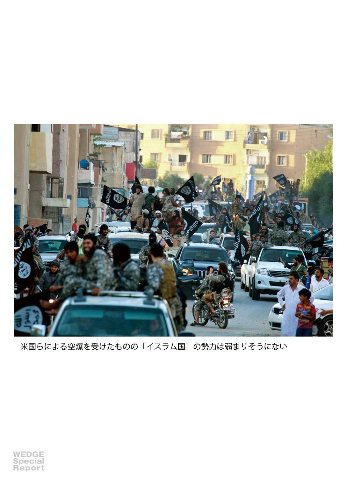
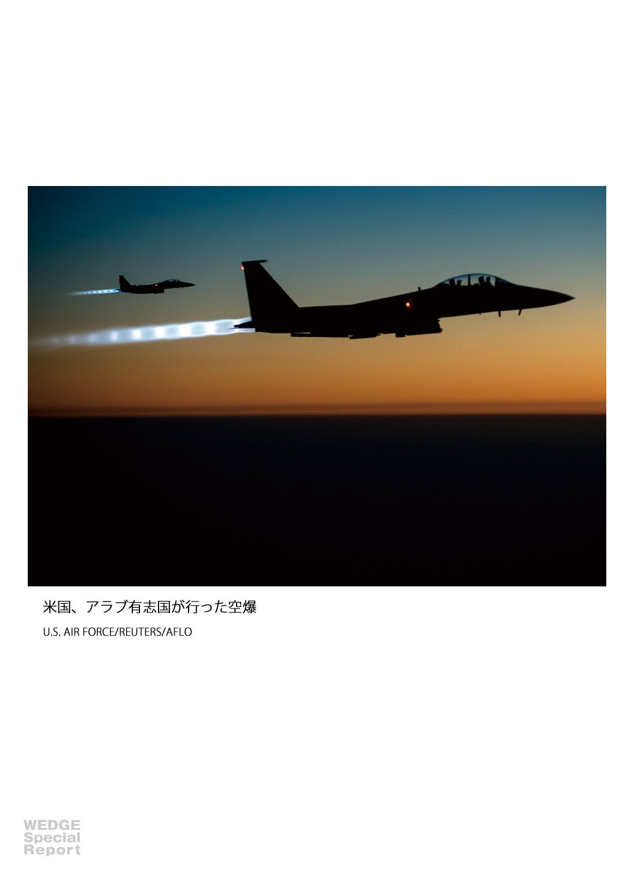

| 「イスラム国」の正体 なぜ、空爆が効かないのか Wedgeセレクション | |
| 池内 恵 & 高岡 豊 & マイケル・シン & Wedge編集部 | |
| (2014) | |
初 出：この電子書籍は月刊『Ｗｅｄｇｅ』２０１４年11 月号、９月号掲載の特集記事を電子化したものです。電子化に際し、一部加筆・修正を加えている場合もあります。
［表紙画像］MILITANT WEBSITE/AP/AFLO
従来型の軍では対処できぬ
「アメーバ組織」の行動
「イスラム国」とは一体何なのか──。誕生した背景、集結する人材、その目指すところなどについて、中東の専門家が分析する。米国を中心に空爆が行われているが、その裏には彼らを育ててしまった「焦り」も垣間見える──。
「アル＝カーイダ３・０」世代と
変わるグローバル・ジハード
池内 恵
東京大学先端科学技術研究センター准教授
「イスラム国」への対処策には困難が伴う。イラクやシリアの支配領域がさらに拡大しないように封じ込めることは可能だろう。しかし、「イスラム国」とそれに類似し呼応する同様の運動がイラクやシリアで、あるいは世界各地でテロを行い紛争に関与し、そこに世界中からジハード戦士を名乗る義勇兵が集まってくる現象を根絶するのは困難である。
最大の障害は、「イスラム国」の背後にあるグローバル・ジハード運動の組織原理である。この運動の組織の原理と実態は、過去10 年に大きく変化し、中心組織や指揮命令系統のない、分散型の非集権的な組織、いわば「組織なき組織」に変貌した。テロ対策、軍事作戦とも、通常は「組織」に対して行われる。根幹で明確な組織がなく、各個人の自発的な結集によって成立するグローバル・ジハードの集団に対処することは、従来型の軍・警察に困難が伴う。
世界各地でアル＝カーイダや「イスラム国」に共鳴し、武装闘争やテロを繰り広げる諸集団は、黒旗などのシンボルや、ジハードによるイスラム教の支配の確立といった基本的な宗教的信念を共有するのみで、組織的つながりが明確ではない。諸組織のネットワーク的な緩やかなつながりによって結果として大きな運動が現れてくる。
２００１年の９・11 事件を境に、米国は世界規模で大規模な「対テロ戦争」を行って、アル＝カーイダは中心組織や拠点を失った。11 年５月にはカリスマ的指導者のビン・ラーディンも米海軍特殊部隊の攻撃で殺害された。
米国主導の対テロ戦争に対応して、アル＝カーイダ系の活動家たちは分散型で非集権的・ネットワーク的な組織論を提唱した。理論面での代表的な活動家はアブー・ムスアブ・アッ＝スーリーである。スーリーはシリア出身で、アフガニスタンでの対ソ連ジハードを経たうえで、ビン・ラーディンの広報宣伝や理論面での側近となった。
04 年に大著『グローバルなイスラム抵抗への呼びかけ』をネット上で発表し、９・11 事件以後のグローバル・ジハードの新たな組織論を展開した。強大な軍事力・警察力・諜報力を駆使して行われる「対テロ戦争」の前に、従来型の秘密組織は無力のため、当面は分散して潜伏し、極力組織化を避けて摘発を逃れ、欧米社会で小規模だが顕著なテロを繰り返す結果として、いわば「現象」としてグローバル・ジハード運動を成立させることを構想した。
「ホームグロウン（地元育ち）」の過激派を養成し、「ローン・ウルフ（一匹狼）」型の小規模のテロを欧米社会の政治・経済の中枢的施設や象徴的な場所やイベントに対して行っていくのが分散型のジハードの手段となる。スーリーは同時に、やがてイスラム諸国の各地で政権が揺らぎ、統治が及ばない領域が現れてくると予想し、それを「開放された戦線」と呼んだ。「開放された戦線」が現れたときは、そこに世界中からジハード戦士が集結し、大規模に組織化・武装化して領域支配を行うことを長期的な目標として掲げた。
スーリーが構想したグローバルな「開かれた戦線」への結集という理論は、各地のローカルな紛争の中で台頭した武装民兵勢力によって機会を与えられた。各地で緩やかにアル＝カーイダへの共鳴や参加を表明して武装闘争を行う新世代の諸組織と人物は「アル＝カーイダ２・０」とも呼ばれる。
その代表格が、「イスラム国」の直接の起源となった「イラクのアル＝カーイダ」組織の指導者アブー・ムスアブ・アッ＝ザルカーウィー（１９６６－２００６年）である。03 年のイラク戦争によるフセイン政権の崩壊後、駐留米軍やイラク新政府に対してテロ・武装蜂起を繰り広げた諸集団の離合集散の中でザルカーウィーは台頭した。
ザルカーウィーはアル＝カーイダへの参加を表明し、現在のアル＝カーイダ中枢のアイマン・ザワーヒリーから承認を受けたが、それまでのアル＝カーイダにはない要素を加えた。それはシーア派を異端と非難しジハードの対象とする、宗派主義的な要素である。
アル＝カーイダ中枢からは、イスラム世界の団結を乱し、不要な反発を招いて敵側を利するものとして批判を受けたものの、イラクの文脈では、宗派主義を煽ったことによって内戦を激化させ、新政府の基盤の弱体化、米軍への大きな犠牲を強いたことで、ザルカーウィーの組織と路線は頭角を現した。
ヨルダン人ジャーナリストが聞き取って05 年に発表したルポによれば、ザルカーウィーらは20 年までに世界規模のカリフ国家を設立する行動計画を温めていた。この計画によれば、10 年から13 年初頭にかけてアラブ世界の諸政権は「正当性と存在意義を徐々に失っていく」と想定された。揺らぐアラブ諸政権を打倒して、アル＝カーイダ系の勢力が権力を握る「復活と権力奪取と変革」の時期がくると構想されていたのである。
宗派紛争を引き金に泥沼化したイラクの治安を、米国ブッシュ政権は07 年に大規模な増派 を行って鎮静化させた。ザルカーウィーは06 年に米軍の攻撃で殺害されており、後継組織も打撃を受けて弱体化した。そのため、「20 年までにカリフ制を設立する」というザルカーウィーらの構想は夢と終ったかと思われた。
しかし、11 年の「アラブの春」の後、この構想は息を吹き返した。アサド政権が反政府抗議行動に過酷な武力弾圧を続け、一般市民が殺害される映像が出回ると、反政府勢力側に立ってジハードを行うと称する義勇兵が世界各地からシリアに流入した。「イラクのイスラム国」と改称していたアル＝カーイダ系勢力も越境してシリアの紛争に参入した。

ここに各国から集まる世代は「アル＝カーイダ３・０」とも呼ばれる。20 代半ばまでの世代が多く、ビン・ラーディンなどの第１世代からはもちろん、ザルカーウィーらの第２世代からも大きく隔たっている。第３世代には特に目新しい思想・理論はなく、インターネット上に流布している既存の宣伝文書や映像を受け入れ、グローバル化や情報化によって得たインフラを使いこなして世界を流動して戦闘に参加する。
「イラクのイスラム国」は、シリア土着の勢力を中核に台頭した「ヌスラ戦線」に共闘を申し入れ、13 年に合併して「イラクとシャーム（拡大シリア）のイスラム国」を設立したと宣言した。しかしこれにはヌスラ戦線の活動家から異論が出て、アル＝カーイダ中枢のザワーヒリーも合併を認めないと声明を出した。この時点から、「イスラム国」はアル＝カーイダの中枢と袂を分かち、ヌスラ戦線と激しく衝突している。
このようにイラクとシリアで、「イスラム国」は、宗派主義的なローカルな対立構造を利用して紛争を煽り台頭した。宗派主義的な政治対立の土壌を根絶しなければ根本的な対処策とはならない。同時に、グローバルなジハード運動は非集権的で分散的なため、世界各地からの戦闘員の流入の阻止や、先進国で自発的にテロを行う「一匹狼型」のテロを完全に防ぐことも容易ではない。

イラクやシリアで組織を軍事的に破壊したとしても、世界各地で組織的つながりなしに行われるテロは阻止できない。軍事作戦に反発し、勝手にテロを行って「イスラム国」への支援・参加を表明する組織や個人が出現する危険性もある。
グローバル・ジハードの思想と組織論に立脚したアメーバのような「イスラム国」の脅威を、世界は緊張を持って見守っている。

池内 恵
Satoshi Ikeuchi
東京大学先端科学技術研究センター准教授
１９９６年東京大学文学部イスラム学科卒。同大学大学院総合文化研究科で中東地域研究を学び、アジア経済研究所研究員、国際日本文化研究センター准教授を経て、２００８年10 月より東京大学先端科学技術研究センター准教授。
世界80 カ国から集まる戦闘員
「イスラム国」は空爆国が育てた
髙岡 豊
中東調査会上席研究員
これまで「イスラム国」を放任し、成長させてきた国が焦りをみせている。２０１４年８月、アメリカはイラク、シリアで大攻勢をかけていた「イスラム国」に対しイラク北部での限定的空爆を開始した。爆撃の範囲は次第に拡大し、イラク西部のアンバール県でも「イスラム国」の拠点が空爆された。９月にはフランスも空爆に参加し、軍事行動やその支援に参加する国も増加した。
アメリカはさらに、９月22 日にはシリア領内でも「イスラム国」を含むイスラム過激派諸派への空爆を開始し、これにはサウジアラビア、バーレーン、カタール、ＵＡＥ、ヨルダンも参加した。

アメリカは「イスラム国」を攻撃するにあたり、「国際同盟」の形成に腐心した。これは、イラクやシリアの紛争で特定の勢力に肩入れしているとの批判を避けるためと、今や「イスラム国」の問題が単独の国家や狭い地域の問題ではなく、世界規模での対策を必要としているからである。
「イスラム国」に国際的な対処が必要なのは、同派が中東地域などにおける既存の国家や国境を欧米諸国の侵略による押し付けとして否定していることもさることながら、より重要なのはイラクとシリアにおける「イスラム国」の活動のため、世界各地で「ヒト、モノ、カネ」すなわち資源が調達され、「イスラム国」に送り込まれているからである。
例えば、「イスラム国」に参加する非イラク人・非シリア人の戦闘員の数は１万５０００人以上と推定されているが、彼らの国籍は80 カ国以上にわたるとされている。また、彼らはイラク軍やシリア軍から奪取した物とは異なる高性能の兵器で武装し、そうした兵器にはアメリカ製の兵器も含まれる。
さらに、同派にはアラビア半島諸国の様々な個人・団体から多額の資金が提供されている。こうした資源の大半は、イラク、シリアと国境を接するトルコを経由してほとんど規制や取り締まりを受けることなく「イスラム国」に提供された。
中東諸国にとっての
「イスラム国」とは
従って、「イスラム国」の打倒や抑制のためには、イラクやシリアでの軍事行動ではなく、同派への資源供給の遮断こそが最優先課題となるべきところである。しかし、トルコが上記の「国際同盟」の活動に積極的には応じていないことに象徴されるように、アメリカを含む諸国が「イスラム国」への資源の遮断に真剣に取り組んでいるようには見受けられない。
「イスラム国」はその前身となる団体が04 年には既にイラクで活動しており、その存在そのものは新奇ではない。それが現在のように勢力を伸ばした原因として、イラクの政情の混乱とシリア紛争を挙げることができる。特に、11 年の時点で、「イスラム国」は本来の活動地のイラクで勢力が衰退しており、これを回復する契機としてシリア紛争が重要である。
シリア紛争では、同国のアサド政権を打倒しようとする反体制武装勢力が、その思想や素性を詮索されることなく肯定され、彼らがシリア国外で資源を調達することが黙認・奨励された。資源の大半は、トルコ経由でシリアの武装勢力に流入した。
「イスラム国」はこうした風潮に便乗し、当初は「ヌスラ戦線」というフロント組織を通じて、13 年４月以降は「イラクとシャームのイスラム国」と名乗り、外部から寄せられる資源の主な受け取り手となった。イラクで地元の支持や活動のための資源を失った「イスラム国」は、シリア紛争で欧米諸国や一部アラブ諸国、トルコが反体制派を支援したことに乗じ、勢力を回復させた。
「イスラム国」への資源の供給元となった諸国には、外交・国際関係上の利害や目標と共に、それぞれの国内事情も影響を与えていた。例えば、「アラブの春」の政治変動を経たチュニジアでは、釈放された元政治犯の中にイスラム過激派の活動家が多数含まれており、彼らがモスクを拠点にシリアへの戦闘員の勧誘・送り出しに関与した模様である。
また、リビアでもカダフィー政権放逐の際に乱立した民兵の一部がシリアに転戦することが、リビア国内の混乱を回避するため黙認されたようである。サウジアラビアやクウェート等の湾岸諸国でも「イスラム国」などのための資源の調達が半ば公然と行われ、著名な政治家やＮＧＯが関与した。
各国はこうした動きに対する本格的な取り締まりに総じて及び腰だったが、それには各国が取り締まった場合はシリア紛争でイスラム過激派支援に費やされる資源が自国での政情・社会不安につながることを嫌い、こうした活動を放任していた側面があることを見のがすことはできない。
最近では、欧米諸国出身の「イスラム国」戦闘員の問題が治安上の不安要素として注目されているが、欧米諸国では自己実現の方途を見出せない不満層がイスラム過激派の勧誘対象となっている模様で、ここでも本来送り出し国が取り組むべき社会問題が紛争地であるイラクやシリアに転嫁されている部分がある。
確かに、「イスラム国」の資源供給元となった各国では、政府の政策としてその「イスラム国」支援が行われたわけではない。しかし、「イスラム国」のための資源の調達が、各国の不作為の下で拡大したことも事実である。
９月25 日、国連安保理は「イスラム国」などに加入しようとする人員の移動を阻止する立法を加盟国に義務付ける安保理決議２１７８号を採択した。ここでようやく、「イスラム国」への資源供給への対策が端緒についたのである。
ただし、「イスラム国」対策で焦点となる諸国はトルコ、湾岸諸国、チュニジア、リビアなどであり、ここに、シリア、イラン、イラクなど上記の諸国と利害が対立する国々といかに連携するか、という難題も関連してくるため、各国が短期間のうちに足並みをそろえて対策を取るのは難しい。
今後も続く
「対症療法」
それ故、今後も「イスラム国」対策は対症療法的・逐次的に講じられることが予想される。そして何よりも、アメリカを含めこれまで「イスラム国」を放任し、成長させた諸国がそうした態度を根本的に改めることなしに「イスラム国」への攻撃に乗り出したという皮肉な現実こそが、「イスラム国」対策の長期化は必至である、との見通しの背景にある。
髙岡 豊
Yutaka Takaoka
中東調査会上席研究員
新潟県出身。１９９８年早稲田大学教育学部卒業。２０００年上智大学大学院外国語研究科博士課程前期修了（修士）後、在シリア日本国大使館専門調査員。03 年４月より中東調査会。11 年博士号取得（上智大学）。
混迷極める「イラク危機」の処方箋
マイケル・シン
ワシントン近東政策研究所マネジング・ディレクター
混沌続くイラク情勢
放置してはならぬＩＳＩＬ
ＩＳＩＬの勢いが止まらない。彼らは近代の国境線を否定し、中東混乱に拍車をかけている。
制圧された地域は、これまで米国が手塩にかけて育ててきた治安部隊が守ってきた地域であり、米国内では失望が広がっている──。
イラク危機は、米国、日本、その同盟国の利害に重大かつ差し迫った課題を突きつける。危機は、ただでさえ混沌としている中東をいっそう不安定にする恐れがある。原油価格は上昇した。
この紛争は、「イラク・レバントのイスラム国」（ＩＳＩＬ。またはＩＳＩＳ、「イスラム国」）と呼ばれるスンニ派過激組織が他の宗派と戦っているものだ。脆弱とはいえイラクが必死に勝ち取った民主化の成果を後退させてしまう恐れもある。
米国では特に大きな失望を招いた。何しろＩＳＩＬに制圧されている地域は、過去10 年間、米軍主導の部隊の多大なコストと犠牲の上に守られてきた地域であったからだ。ジハード（聖戦）主義者の猛攻で散り散りに消えたイラク治安部隊は、米国の費用負担で訓練・装備されていた。
ＩＳＩＬと支持勢力によるイラク支配となるのか、敵対する複数の民族居留地にイラクが分裂する事態に向かう中、西側諸国では、「中東の紛争は解決が困難で、西側の介入は無駄に終わる」という虚無感を強めている。
危機の根本原因
イラク危機が突然ニュースを賑わすようになったのは、２０１４年６月、ＩＳＩＬの武装勢力がイラク第２の都市モスルを掌握した時のことだ。だが、兆候はそれ以前からある。
10 年のイラク議会選挙の後、いわゆる「アルビル合意」が権力共有の政府を誕生させた。ヌリ・カマル・アル・マリキ首相と同氏のシーア派政党連合「法治国家連合」が新政府を率い、他の主流なスンニ派、シーア派、クルド人勢力が参画していた。しかし、宗派間の根本的な対立は解消されず、11 年12 月に米軍がイラクから撤退するや否や、バラバラになり始めた。
イラク政府は米軍撤退後、タリク・アル・ハシミ副大統領、ラフィ・アル・イサウィ財務相などスンニ派の重要人物を逮捕・訴追し始めた。これが政情不安の始まりであった。
政治的な妥協を仲介しようとする米国も、12 年３月にマリキ首相の更迭を試みた超党派の取り組みもこれを食い止めることができなかった。原油収入の分配などの問題を巡るバグダッドの中央政府とクルド自治政府（ＫＲＧ）の対立が事態をより一層悪化させることになった。
イラクで高まるスンニ派の不安は国境を越えたシリアでの紛争と相まって、ＩＳＩＬが活動を活発化させる格好の土壌になった。13 年に再び勢力を強め始め、ファルージャを制圧。ＩＳＩＬは近代の国境線を認めておらず、イラクだけでなく、近隣諸国をも脅かす、過去数十年間で最大の脅威へと転移する土台を築いた。
米国における議論の大部分は、03 年にイラクを侵攻したジョージ・ブッシュ前大統領の決断と、11 年に米軍を全面撤退させたバラク・オバマ現大統領の決断の是非に向けられた。
ピュー・リサーチ・センターの世論調査によると、イラク戦争開戦時には、米国民の72 ％が戦争を支持していた。05 ～06 年になると、均等に意見が割れた。08 年２月、米国大統領選挙がヒートアップし始める頃には、47 ％の人が「イラクが安定するまで米軍の部隊は現地にとどまるべき」と考えた。
恐らくは07 年のいわゆる米軍「増派」の成功に影響され、48 ％の人が戦争は非常に順調、またはかなり順調に進んでいると思っていたものの、武力行使が正しい判断だったと考える国民はわずか38 ％にとどまった。
イラク戦争に対する不満は、08 年の選挙の重大な要因となり、オバマ氏がチャンスをつかんだ。「愚かな戦争」と非難してきたイラク戦争への反対姿勢は、オバマ氏が抱いてきた信条であり、選挙運動の柱でもあった。
このため、オバマ大統領が11 年12 月に米軍部隊をイラクから全面撤退させた時には何ら意外感はなかった。大統領は撤退の期日以降も限定的な部隊の継続駐留を模索したが、イラクが米軍に必要な法的免責を与えるのを拒み、ホワイトハウスが送る矛盾したメッセージによって交渉が妨げられると、提案が拒絶される結果に終わった。
米軍撤退はその後、オバマ大統領の象徴的な成果として謳い上げられ、大統領は12 年の外交政策に関する議論で、一部部隊の残留を認めさせようとした事実を否定した。
重要なのは、米軍撤退に伴い、米国政府高官がイラクに割く関心と関与のレベルが急激に落ち込んだことだ。オバマ政権の熱意不足だけがもたらした結果ではない。中東地域を揺るがし、米政府内の中東専門家の時間とリソースを分散させたアラブの民衆蜂起と、米国の焦点を中東からアジアへ移そうとするオバマ大統領の願望、そして経済の不振と戦争疲れの最中に広がる国際的な意識の減退が事態を悪化させた。
こうした現象により、米国が中東から距離を置いているとの強い印象を生み、中東地域における米国の同盟システムを著しく弱体化させた。その結果生じた安全保障の空白が現在の状況に繋がっている。ただし、米国と同盟国の中東地域における利益は今も過去と何ら変わらず重要である。米国は、中東を襲っている危機の解決を試みる以外にほとんど選択肢がない状況に置かれることになった。米政府が無視しているうちに危機は悪化し、米国は以前より同盟関係が弱く、使える手段が少ない状況で解決を図るしかないのだ。
各国はイラクでの過度なコミットメントを避けようとする。特にオバマ大統領は、これが優先事項になるはずだ。同時に米国と同盟国は、シリアでの戦闘に煽られたイラク危機がさらに広がり、特に脆弱な同盟国であるヨルダンとレバノンへ飛び火するのを食い止めようとするだろう。
シリア、イラク双方に対する西側の遠慮がちなアプローチによって現在の危機がこれほど重大な事態に発展する一因となったように、折り合いをつけるのは難しい。ここで米国と同盟国を導くべき３つの原則がある。
第１に、的を絞った軍事力は、外交のための条件整備を視野に入れて行使すべきだ。オバマ大統領はイラクでは、主要宗派間の政治的和解がより強固な米国の軍事的コミットメントの前提条件であることをはっきり示した。
だが、包括的な新政府が近く誕生しそうな兆しは見えない。かねてマリキ首相に不満を抱いてきたアラブ人スンニ派は、ＩＳＩＬのイデオロギーや究極の目的を共有していないにもかかわらず、ＩＳＩＬと手を組む用意があるように見える。
一方、シーア派は、イラク軍が弱体化し、外国の支援が実現しない中で、シーア派民兵組織の力に訴えそうで、これが宗派間の暴力行為をさらに煽ることになる。
これを食い止めるには、恐らくどんな外国勢力の介入も、少なくとも初期段階は、新しいイラク政府の樹立に先行することが必要になるだろう。ＩＳＩＬに軍事的な打撃を与えることは、イラクが一段と深い混沌へと陥ることを防ぐために欠かせない、政治的和解を実現する最善の希望をもたらすはずだ。
第２に、どんな対応策も地域全体に焦点を合わせなければならない。ＩＳＩＬを倒し、イラク危機の拡大を防ぐためには、真っ先にシリアにおける決然とした行動が必要になる。シリアでは、米国と同盟国はこれまで、無益な外交交渉を追求する程度のことしかしてこなかった。ただ、オバマ政権は、シリアの責任ある反政府勢力を強化するための５億ドルの予算支出を議会に要請した。ようやくその必要性を理解したといえる。
ヨルダンとレバノンには追加的な支援も必要になるかもしれない。両国は既にシリア紛争の波及効果と必死に戦っており、さらなる負担に耐える余裕がない。そして、これらすべての問題（特にイラクとシリア）に対する効果的な対応には、米国と湾岸協力会議（ＧＣＣ）の同盟国との関係の改善と、地域の政情不安の一因となっているイランの活動に対するより強固な抵抗が必要になる。
最後に、米国と同盟国は様々な手段を包括的に利用することによって、ＩＳＩＬおよびＩＳＩＬと同じような考えを持つ集団と戦う必要がある。
これは、資金源と兵站を標的にし、パートナー諸国と協力してＩＳＩＬのイデオロギーに対抗し、戦場に出入りする外国人戦士を捕まえ、ＩＳＩＬの活動が最も活発なイラク、シリア、ヨルダン３カ国の国境地帯沿いのスンニ派アラブ民族の支持を勝ち取ることを意味している。
傍観だけは避けるべき
この戦略は、西側諸国の指導者たちが恐れている莫大な軍事的、金銭的コミットメントを必要としないが、これまで避けてきたような中東への積極的関与、長期的コミットメントを必要とする。成功する保証もない。
米軍が撤退して以降、中東の危機がどんどん転移するのを傍観してきた米国と同盟国は、よく練られた計画でさえ頓挫する可能性があり、イラク分裂の可能性に備えるべきだということに気づかされるかもしれない。
米国と日本を含め、責任ある国家が何としてでも避けなければならないのは、何もしないことだ。政策の欠如は我々の重要な利益を単に無視するだけの政策であり、利益を守るために賢明な対策を取るという政策立案者の基本的な責務を放棄するものだ。
マイケル・シン
Michael Singh
ワシントン近東政策研究所
マネジング・ディレクター
２００３～０５年に米国務省でコリン・パウエル、コンドリーザ・ライス両長官の特別顧問を務めた後、05 ～08 年にホワイトハウスの米国家安全保障会議（ＮＳＣ）でイラン部長、中東上級部長を歴任した。
「イスラム国」の正体 なぜ、空爆が効かないのか
二〇一四年十月三十一日 電子版発行
発行所：株式会社ウェッジ
千代田区神田小川町１－３－１
ＮＢＦ小川町ビルディング３Ｆ
©WEDGE
＜禁止事項＞
１．本誌書籍のデータを第三者に譲渡、あるいは公衆送信すること。
２．法律で認められている範囲をこえて、本電子書籍の全部あるいは一部を、弊社の許可なく複製、転載すること。